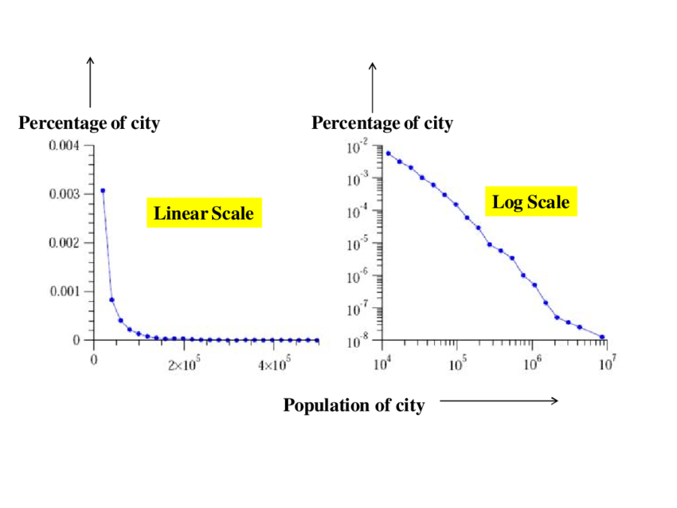

- When graphing data over time, it is important to see if the data has seasonality. You should check to see if the data has periodic trends and account for them or describe them in your graph and analysis.
- If your data is periodic it may be useful to split your data into smaller sections by using zero based indexes. These can be displayed separately or on top of each other using the different or the same origins, respectively.
- Consider using logarithmic scale when showing growth of population for example. This allows you to see how much it is increasing compared to the previous amount.

In the image above, you can see an example of two graphs showing the population of a city. In the linearly scaled graph, the population decreases quickly and it is hard to distinguish the data at close to the x-axis. When we graph the same data using a logarithmic scale, it is easy to see the changes in the population over time.
- If you are showing a time series chart, don't connect the lines over missing data. Leave the space empty or indicate that the data was notrecorded for that period of time. If you include the line, it can be misleading.